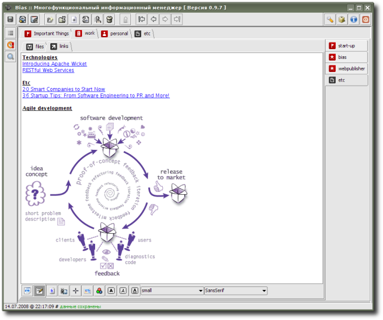

HTMLPage - extension to create notes in HTML format; has built-in visual (WYSIWYG) editor and ability to view/edit HTML-code; extension is intenede for storing formatted text with images, links (btw, implemented creation of usual “external” links as well as “internal” ones - pointing to another organizer data entries) etc., also quite suitable for storing working versions of entries, which are going to be published in the blog; it's possible to save notes as usual HTML-page files.
Extension is provided by R. Kasianenko, an author of Bias application.
Preview:
